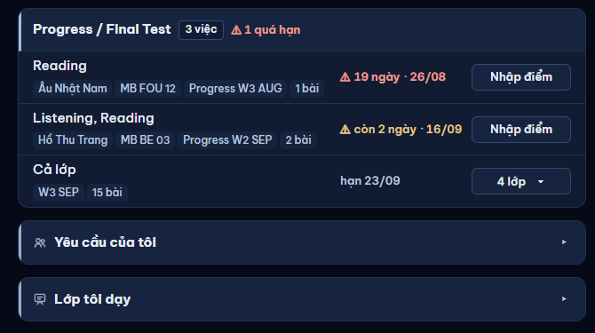
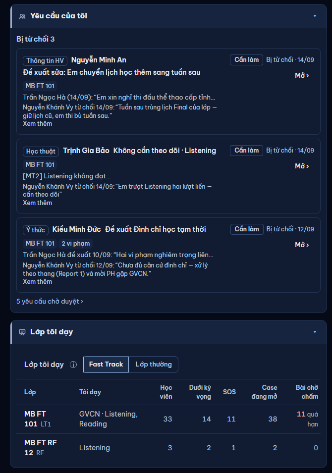
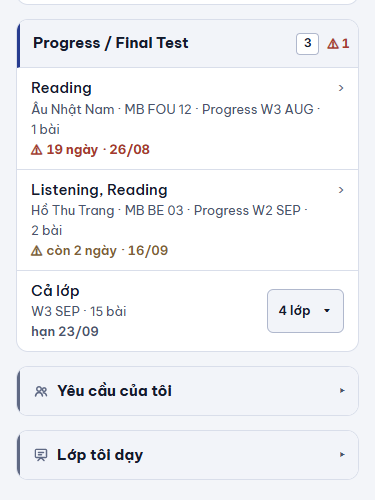

Nguồn: audit 08/11 dòng CV6 → [XM] #1240–#1242 (5) → chủ SP 10/11 "VẪN LÀM". Ba dải gập dùng chung DaiNhom: Yêu cầu của tôi, Lớp tôi dạy (GV, cuối trang) và Đã bỏ qua (QL, tab Việc quản lý).
Trước: tam giác ▸ 13 px ở mép phải, xa tên (~560 px), là nút riêng không nhận Tab; "Yêu cầu của tôi" mượn biểu tượng người. Sau: 1chevron 16 px ngay sau tên (sau chip nếu có), xoay xuống khi mở · 2cả dải là một nút (bấm đâu cũng mở / đóng; Tab dừng một lần; viền focus cả dải; rê sáng cả dải) — ⓘ vẫn bấm riêng · 3biểu tượng riêng: Yêu cầu = phiếu gửi đi, Lớp tôi dạy = bảng lớp (đã có) · 4mở "Lớp tôi dạy": bỏ tiêu đề lặp "Lớp tôi dạy" bên trong (dải đã ghi), giữ ⓘ + Fast Track | Lớp thường.
Dải nhóm việc thường (Mock Test, Progress / Final Test…) không gập — không đổi. Demo 14/09/2026, GV Trần Ngọc Hà. 1440 tối · 375 sáng.


Dải cao 48 (vùng chạm cả dải ≥ 44) · chevron ngay sau tên, không còn tam giác 8 px ở mép (vùng chạm 24 px trước đây).

Chevron sau chip "3 việc"; ⓘ đứng sau chevron, nằm trên lớp phủ nên bấm ⓘ chỉ mở giải thích, không gập dải. Mở: dòng việc + Khôi phục như web.
| Thao tác / thành phần | Trước (web) | Sau | Giữ / đổi |
|---|---|---|---|
| Mở / đóng dải | bấm vùng tên (nút) hoặc tam giác mép phải (nút thứ hai, tabIndex -1, aria-hidden) | cả dải là MỘT nút aria-expanded; chevron trong nút; Enter / Space; Tab dừng một lần | ĐỔI — CV6 |
| Chevron | chữ ▸ / ▾ 13 px, mép phải | SVG 16 px nét 1,75 màu --text-dim (≥ 4,5 : 1 trên --surface-2 cả sáng / tối — tam giác cũ 8 px khó thấy) sau tên (sau chip), xoay 90° khi mở; giảm chuyển động → không xoay động (đổi ngay) | ĐỔI — CV6 |
| Rê / focus | rê chỉ ô tam giác | rê sáng cả dải (--accent-soft); focus viền 2 px cả dải | ĐỔI — a11y |
| ⓘ (Đã bỏ qua) · phần phụ của dải | có | có, bấm riêng (trên lớp phủ) | GIỮ |
| Biểu tượng "Yêu cầu của tôi" | hai người (mượn của lớp) | phiếu gửi đi | ĐỔI — CV6 |
| Gập sẵn · chỉ tải khi mở (không đọc Turso khi đóng) · vị trí cuối trang · thứ tự | có | có | GIỮ |
| Bên trong Yêu cầu của tôi (thẻ yêu cầu, Mở ›, Xem thêm, "n yêu cầu chờ duyệt ›") | có | có | GIỮ |
| Bên trong Lớp tôi dạy: tiêu đề "Lớp tôi dạy" lặp · ⓘ · Fast Track | Lớp thường · bảng lớp | có tiêu đề lặp | bỏ chữ lặp (chỉ khi nằm trong dải); giữ ⓘ, nút chọn, bảng | ĐỔI nhỏ — chữ lặp |
| Đã bỏ qua: dòng việc · Khôi phục · chip "n việc" | có | có | GIỮ |
| Dải nhóm việc (không gập) · chip "n việc" · ⚠ quá hạn | có | không đổi | GIỮ |
| Đọc dữ liệu | — | không đổi (chỉ là dáng dải) | GIỮ |